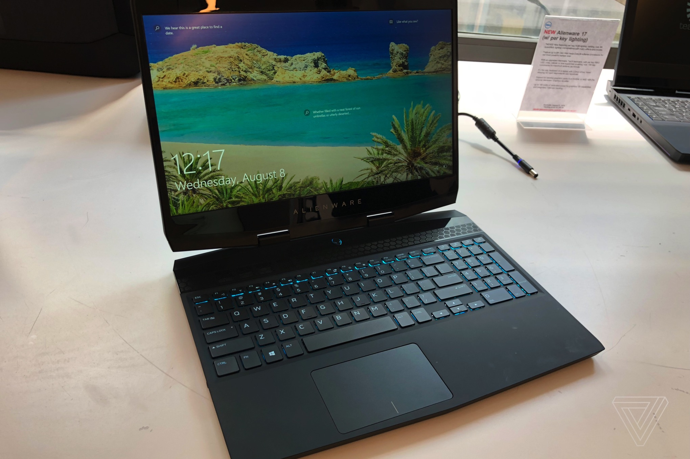
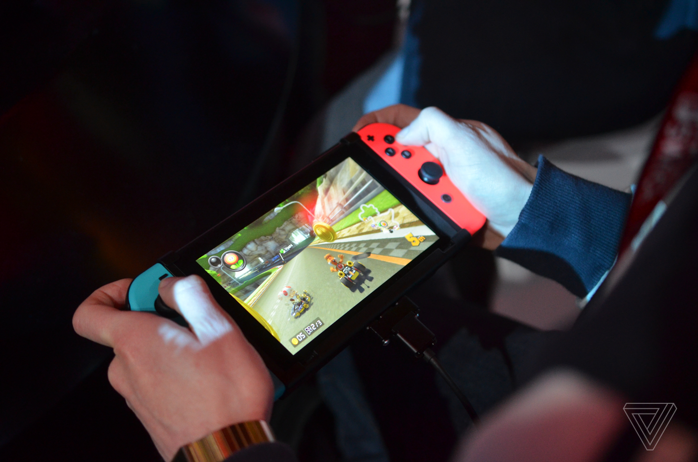
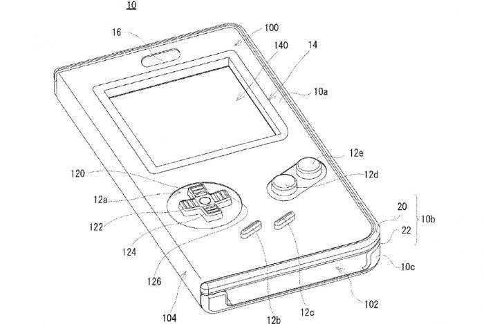
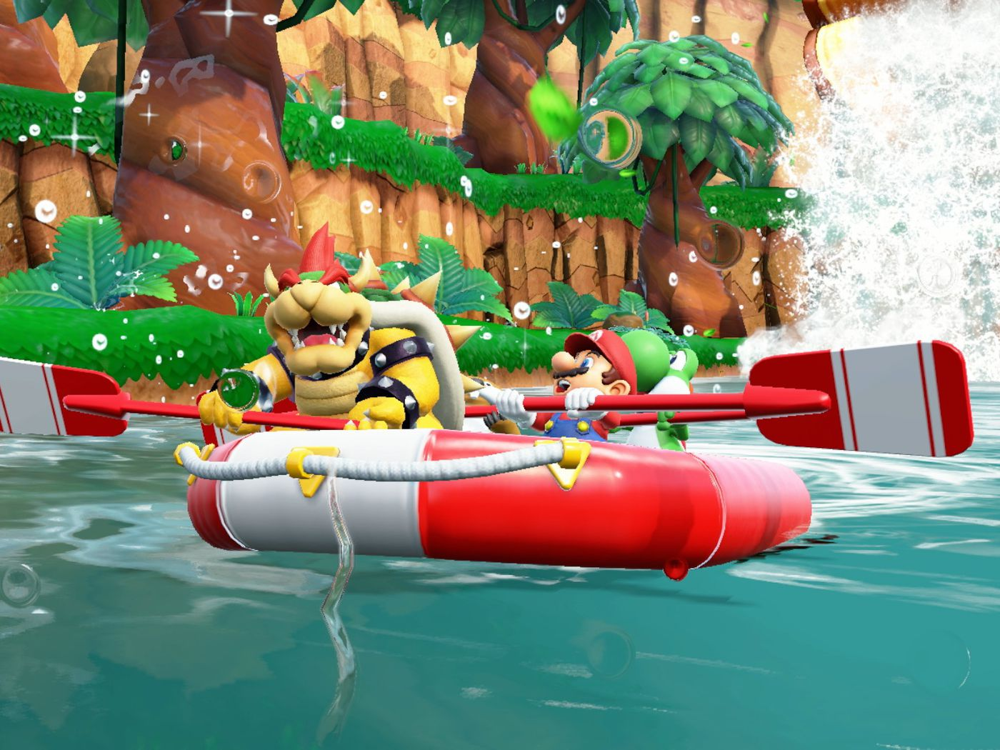

PUBG PC Update 22 Brings New Anti-Cheat Tech, Rank System, and More

By Tom Warren | @tomwarren | Jun 27, 2018, 7:16am EDT
Korean company PUBG, a subsidiary of Bluehole, has dropped its lawsuit against Fortnite makers Epic Games. The PUBG owners
originally filed the lawsuit earlier this year, alleging copyright infringement against Epic Games. While PlayerUnknown’s Battlegrounds
soared in popularity last year, Epic Games introduced its own battle royale mode in Fortnite with similar features all built on the
same Unreal Engine 4 that was created and licensed by Epic Games.
Bloomberg reports that the lawsuit has been dropped, but it’s not clear why and whether there was any settlement between PUBG and
Epic Games. PUBG developer Bluehole previously revealed it had “growing concerns” about the similarities between the two games, and
it’s a battle that seemed to be boiling over into the courts with this lawsuit.
Both Epic Games and PUBG developer Bluehole are part-owned by Tencent Holdings, and Tencent has reportedly been nearing a deal to
increase its PUBG investment to 10 percent. While it’s unlikely a copyright infringement accusation could complicate that deal, the
lawsuit would be difficult to prove and win particularly when Fortnite has copied PUBG’s ideas and not necessarily its content.
Fortnite continues to grow in popularity despite the squabbles. Fortnite surpassed PUBG in monthly revenue in March, and the game
now has 125 million players a year after launch. Fortnite has also been at the center of a cross-play controversy with Sony after
the PlayStation 4 maker blocked players from accessing their Fortnite PS4 accounts on the Nintendo Switch.
Alienware’s m15 gaming laptop is its thinnest computer ever

By Chaim Gartenberg | @cgartenberg | Oct 4, 2018, 9:38am EDT
Alienware has announced its new m15 gaming laptop, and the company is looking to follow in the footsteps of recent gaming laptops from
companies like Razer and MSI by building its thinnest and lightest 15-inch laptop yet.
The m15 has all the things you’d expect from a 2018 gaming laptop: a thinner, Nvidia Max-Q design that trades some performance for portability,
8th Gen Intel processors, up to 32GB of RAM, and plenty of different storage options. Customers will also have the choice between a 60Hz FHD display,
a 144Hz FHD panel designed for gaming, and a 60Hz UHD display that offers better resolution.
The design is the biggest jump from Alienware’s previous models, and it’s immediately apparent when you compare them side by side. The new m15 offers
slimmer bezels, a reduced footprint, and it looks way better than Alienware’s clunky old design.
The new m15 measures in at 4.76 pounds and 0.83 inches thick. (By comparison, the 2018 Razer Blade — which is currently the best gaming laptop you
can buy — weighs 4.63 pounds and is 0.68 inches thick.) Alienware says that the m15 is the thinnest laptop it’s ever made, and it compares it
against the old 13-inch model, which weighs 5.8 pounds and is 14 percent thicker than the m15.
Alienware has also updated the keyboard to a chiclet design (don’t worry, it’s still backlit) and squeezes in a full numpad and trackpad into a more
modern combined pad. Ports-wise, it has three USB ports, one USB-C Thunderbolt 3 port, HDMI and Mini DisplayPorts, Ethernet, and Alienware’s
proprietary Graphics Amplifier plug.
The m15 is not the thinnest or lightest laptop around. After all, an Alienware laptop is still an Alienware laptop, and that means that gaming
performance is always going to be the top priority. But like the other Max Q laptops out there, the m15 is the first from Alienware that feels like
it might not only be useful as a gaming laptop. Its size and weight that could make it a viable option as a day-to-day computer, too, and that’s a
very encouraging thing to see.
The m15 will be available on October 25th starting at $1,299.
Correction: The m15 will start at $1,299, not $1,099.
New Nintendo Switch hardware coming next year, says WSJ

By Sam Byford | @345triangle | Oct 4, 2018, 1:33am EDT
Nintendo is planning to release a new version of the Switch next year, according to a report in The Wall Street Journal. The updated hardware
is said to be planned for the second half of 2019 and could come as soon as summer. The WSJ’s report doesn’t contain any solid details on what
the refresh might include, but one possible feature is an improved LCD screen.
A Switch redesign is almost inevitable at some point; Nintendo has released several iterations of each of its main portable consoles. The
original 3DS, for example, was followed by the 3DS XL, the New 3DS/XL, the 2DS, and the New 2DS XL, each carrying various tweaks to the design,
power, and size without significantly altering the capabilities of the platform.
The Switch hardware is solid, but there’s certainly scope for improvement, and Nintendo will want to maintain sales momentum into the next
financial year. The company expects to sell 20 million units in the year ending March 2019, an ambitious target that will be challenging to
achieve — let alone repeat.
New Nintendo Switch hardware coming next year, says WSJ

By Makena Kelly | @kellymakena | Oct 5, 2018, 12:08pm EDT
In 2016, Nintendo started developing games designed specifically to be played on smartphones. Titles like Super Mario Run and Animal Crossing:
Pocket Camp have brought some of the world’s most lovable characters to our pockets without the tactical buttons or plastic, boxy devices we knew
and loved. That might be changing, though, because Nintendo has submitted an application for a patent that would make your smartphone look and
feel just like a Game Boy.
The patent application was filed this spring, and it describes a case that would fold over a smartphone, showcasing the classic rectangular Game
Boy design. There’s a square cutout in the case which let the phone serve as the pseudo-handheld’s screen, and the buttons below it would be
interactive, capable of delivering the input to the touchscreen. It’s something that other third-party companies have tried to do before — with
varying degrees of success.
Patents don’t always result in products, but Nintendo is having a pretty solid run on behalf of its nostalgia-fueled releases. The NES Classic
sold out immediately following its release in 2016, and that excitement continued when it was re-released this summer, selling more systems than
the PS4, Xbox One, and the Switch in the month of June. It wouldn’t be surprising for the company to meld its classic games and devices with a new
case and bring them to mobile.
And they should. I desperately want to play Kirby’s Dream Land on my phone without having to use emulators.
Super Mario Party would like you to be nicer to your friends

By Megan Farokhmanesh | @Megan_Nicolett | Oct 5, 2018, 1:24pm EDT
There’s no game that gets my friends and I more riled up than Mario Party. A decade’s worth of games across many Nintendo consoles has never
left us with a shortage of board game-fueled vendettas. There’s something even more infuriating about losing when the person who beats you
does it as a dinosaur wearing shoes. The new Super Mario Party on the Nintendo Switch may not fix the friend feuds, but it at least makes the
journey a little nicer.
Like previous Mario Party games, Super Mario Party is essentially a digital board game. Players compete with a single Joy-Con controller,
and the game allows you to pair a second Switch for more mini-games. In addition to the board game competition popularized by older games,
Super Mario Party also features several other modes, including rhythm games, a “team edition” of board game play, a river course in which
you work with other players, and unlimited access to unlocked mini-games. It’s the series’ first step onto the Nintendo Switch, but the marriage
is a perfect one.
There aren’t many surprises in the traditional game of Mario Party, where you roll dice and advance around a board to collect stars, but boards
feel balanced and fun. Players can also choose to roll a regular die or one themed specifically around their character. Bowser, my go-to character,
for example, has a set that will earn you higher rolls than the average die — but you run the risk of whiffing it and landing on a side that will
lose you coins. The perks vary by character, but they make your selection feel more strategical.